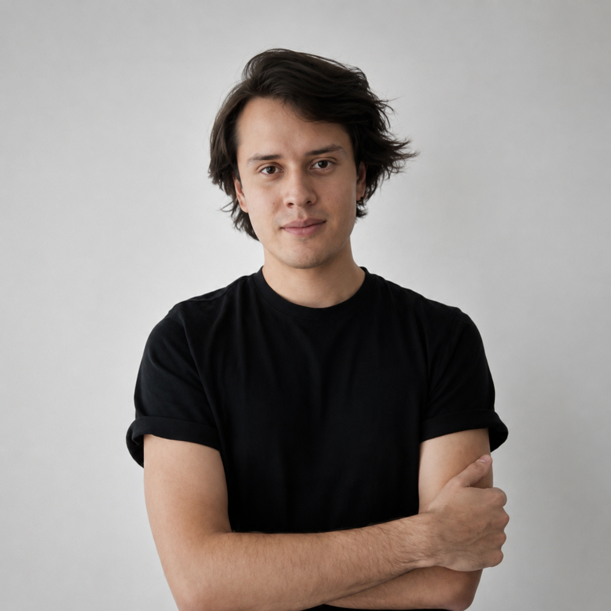

Origin
First we tried to see through walls. Then we learned the planet needed the same kind of sight.
The idea did not begin as a company. It began as a constraint Misael refused to drop: if a human body is in a room, the room should know whether that body is still in trouble — without a camera, without a wearable, without asking permission of the light.
mmWave was the answer that survived contact with physics. A chirp that returns range and motion. A classifier that returns a class, not a face. A node that decides locally because the WAN is not a life-support system. Non-invasive not as a slogan — as an architectural refusal to produce an image of a person.
That same refusal scaled. A hospital bay is a volume. A launch corridor is a volume. The atmosphere between orbit and Point Nemo is a volume. The software that predicts a fall-class event and the software that predicts a debris footprint are the same conscience pointed at different state vectors. Selixor stayed with the rooms. Nuvvio took the sky. The numerical core did not split.
We are not here to narrate care. We are here to make physical reality computable for the people and the planet that have to live in it — quietly, at the edge, with a signature on every number.
Executive roster
The floor that ships it
Misael De Paz
Founder & Chief Executive Officer
Physical intelligence · Applied AI · Institutional systems
Selixor exists because a volume without telemetry is a volume that fails silently. Misael set the constraint: sensors that do not look, software that does not leak, numbers that can be signed.

Marcos Aramburu
Chief Technology Officer
Edge compute · Security · Infrastructure
Dra. Ximena Poblano
Chief Medical Officer
Clinical protocols · Healthcare operations
Vanesa Sokoloff
Chief Client Success Officer
Enterprise implementations · Hospital networks
Headquarters
Torrey Pines, San Diego
Not a skyline office. A technical corridor — applied biology, communications, defense-adjacent engineering. RF benches, a silent test volume, the concentrator hardware we actually ship.

10290 Campus Point Drive, Suite 300 · San Diego, CA 92121
info@selixor.cloud